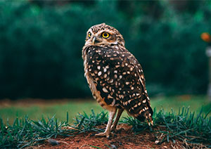
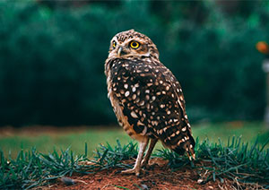

- Common Name: Burrowing Owl
- Scientific Name: Athene cunicularia
- Type: Birds
- Diet: Omnivore
- Average life span in The Wild: 6 - 8 years
- Size: 7.4 inches to 11 inches
- Weight: 5.2 to 8.5 ounces


The facial disc is pale brownish with prominent white eyebrows above the bright yellow eyes. The bill is greyish-olive and the cere greyish-brown. There is a distinct whitish throat band. Upperparts are brown, with the forehead and crown having whitish streaks and dots. Elsewhere is irregularly dotted whitish to pale ochre with relatively large, rounded spots. Flight feathers are barred light and dark, and the tail is brown has 3-4 pale bars. Underparts are whitish to pale buff with dense dusky brown bars. Tarsi are conspicuously long and sparsely feathered. The olive-grey toes are bristled, and the claws are dark horn with blackish tips. Females are usually darker than the males.
Burrowing owls generally active at dusk and dawn, but sometimes at night also. They are highly terrestrial, and are often seen perched on a mound of dirt, telegraph or fence post - frequently on one foot. They bob up and down when excited. Flight is with irregular, jerky wingbeats and they will frequently make long glides, interspersed with rapid wingbeats. Burrowing Owls are comparatively easy to see because they are often active in daylight, and can be surprisingly bold and approachable.
Burrowing Owls feed on a wide variety of prey, changing food habits as location and time of year determine availability. Large arthropods, mainly beetles and grasshoppers, comprise a large portion of their diet. Small mammals, especially mice, rats, gophers, and ground squirrels, are also important food items. Other prey animals include: reptiles and amphibians, scorpions, young cottontail rabbits, bats, and birds, such as sparrows and horned larks. These Owls are quite versatile in the ways they capture prey. They chase down grasshoppers and beetles on the ground, use their talons to catch large insects in the air, or hover in mid-air before swooping down on unsuspecting prey. They also watch from perches, then glide silently toward their target. Burrowing Owls are primarily active at dusk and dawn, but will hunt throughout a 24-hour period, especially when they have young to feed.
Read more about Burrowing Owls on Wikipedia